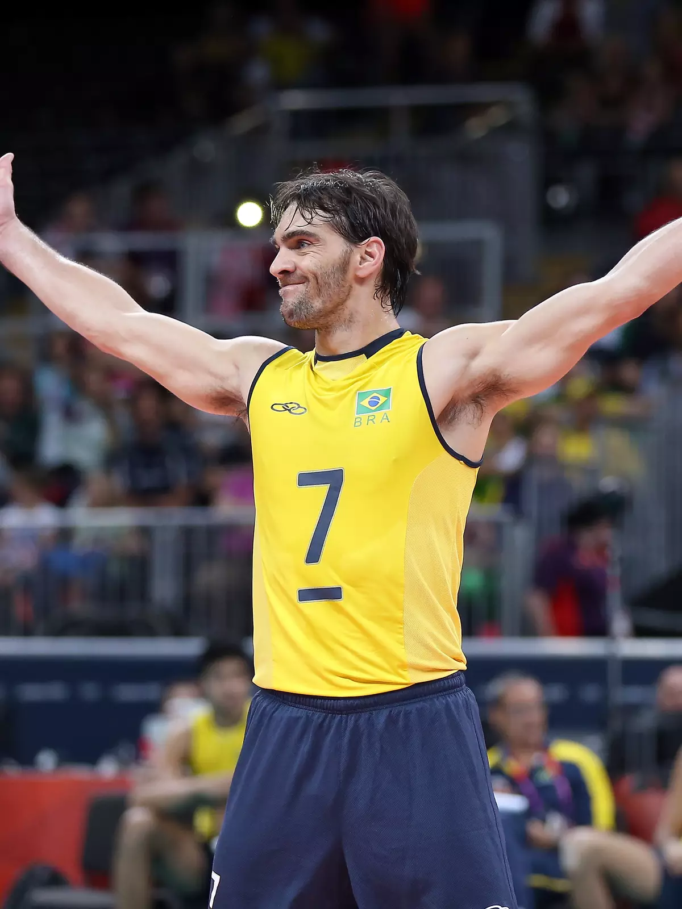
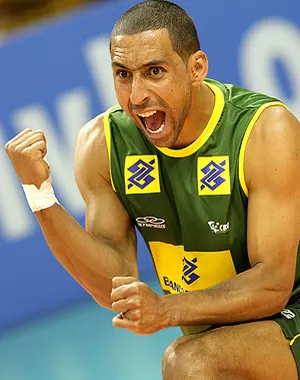
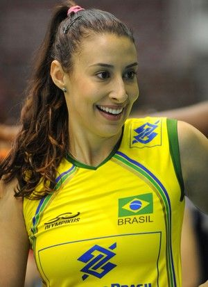
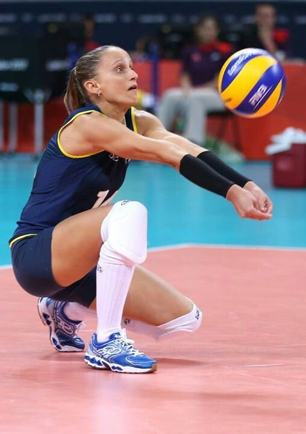

O voleibol chegou no Brasil no ano de 1915. Não se sabe ao certo quem trouxe o esporte ao país, mas foi nesse ano que aconteceu a primeira partida de vôlei na cidade de Recife, Pernambuco.
A partir disso, o esporte foi crescendo e adquirindo adeptos e praticantes em todo o Brasil.
Note que, depois do futebol, atualmente o vôlei é o esporte mais popular do Brasil.
No início, o voleibol, por ser pouco violento, era considerado uma modalidade mais voltada para as mulheres. Com o passar do tempo, ele foi sendo difundido também entre os homens.
Primeiramente, o voleibol teve início no Nordeste, no Colégio Marista de Recife, em 1915. Nos anos seguintes, por meio da Associação Cristã de Moços da cidade São Paulo, ele começou a se espalhar por outros estados.
No entanto, foi somente em 1923, que o voleibol começou a ganhar força no Brasil. Isso ocorreu porque naquele ano foi organizado o primeiro campeonato de voleibol no Rio de Janeiro, sendo o Fluminense o primeiro clube brasileiro profissional criado.
Maiores Ídolos Masculinos do Voleibol Brasileiro

Um dos principais representantes desta nova geração iniciada nos anos 2000, Giba foi considerado o melhor jogador do mundo por várias temporadas e o melhor jogador nos principais campeonatos que disputou.
Como jogador, conquistou três medalhas olímpicas, sendo um de ouro e duas de prata, além de ser tricampeão mundial. Um dos melhores jogadores brasileiros de vôlei.

O líbero Serginho é considerado como o melhor jogador de vôlei de todos os tempos em sua posição.
Ele também é o jogador com mais títulos pela seleção brasileira. Durante os 15 anos que defendeu o Brasil, Serginho conquistou quatro medalhas olímpicas, duas de ouro e duas de prata; dois campeonatos mundiais; duas Copas do Mundo e mais sete ligas mundiais.
Maiores Ídolos Femininas do Voleibol Brasileiro

Sheilla foi peça importante nos dois títulos olímpicos, tanto em Londres, em 2012, como quatro anos antes, em Pequim. Além desses títulos, a oposta tem ainda três medalhas em mundiais (duas pratas e um bronze), sete ouros em Grand Prix e duas taças da Copa dos Campeões.

Dentre os títulos mais importantes de Fabi pela Seleção Brasileira destacam-se o tetracampeonato do Grand Prix, os vice-campeonatos no Mundial, Copa do Mundo e Jogos Pan-Americanos respectivamente. Além da medalha de ouro nos Jogos Olímpicos de Pequim em 2008 no qual foi eleita a melhor líbero da competição.
Fabiana é considerada por muitos críticos do voleibol como a melhor líbero do mundo.